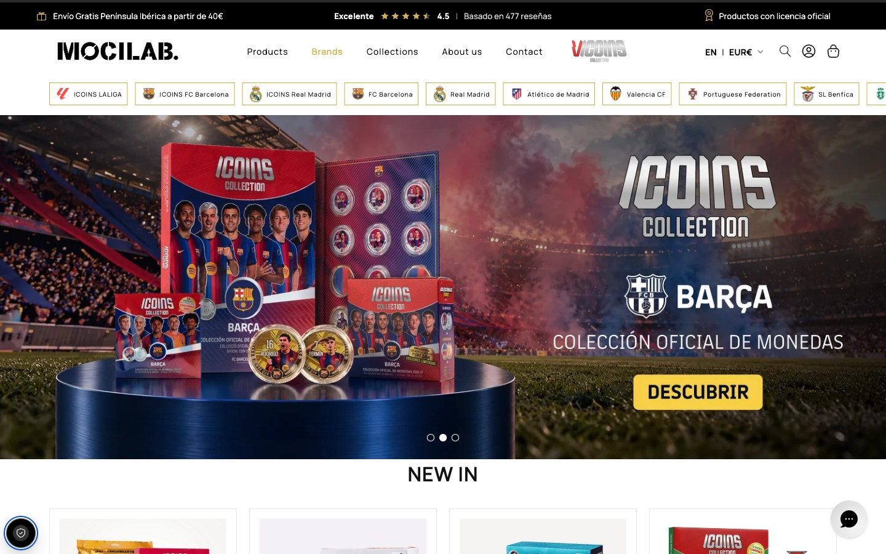
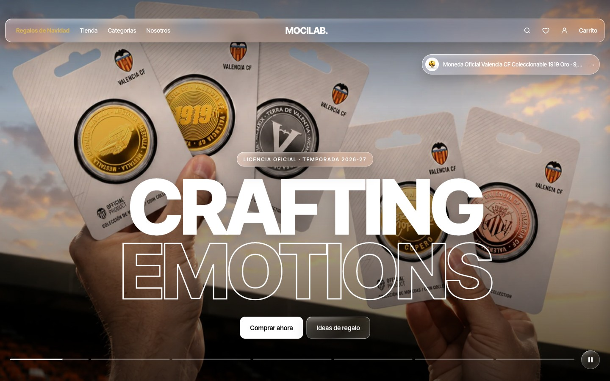
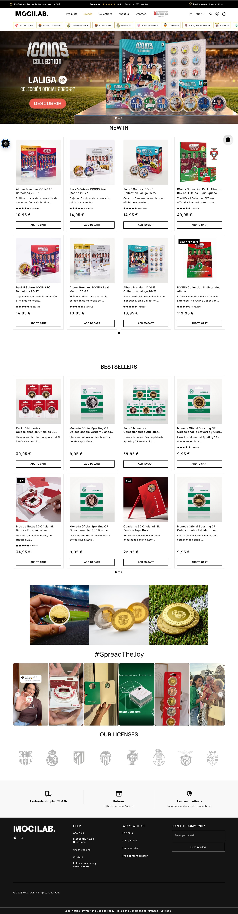
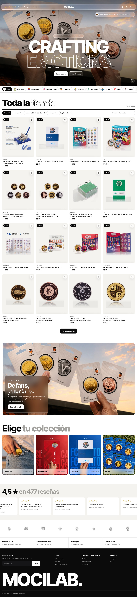

Los mismos productos, fotos, precios, carrito y pago de Shopify, con el aspecto de las marcas que mejor venden online hoy.
Probar la nueva web →

AHORAPROPUESTADesliza para comparar


La portada pasa fotos reales de aficionados con las monedas en el estadio. Emoción antes que catálogo.
Los 106 productos con el mismo fondo, tamaño y margen. Al pasar el ratón se ve la foto en ambiente.
“Añadir al carrito” y vista rápida en cada producto. Menos clics hasta el pago.
Escudos fijos arriba, filtros por tipo con contador y orden por precio.
El carrito dice cuánto falta para los 40 €. Sube el pedido medio.
Sección “Regalos < 25 €” para Navidad y lista de favoritos con ♥.
Se mantiene todo lo que ya funciona:
Es lo que tarda una persona en formarse una primera impresión de una web.
Lindgaard, Carleton University (2006) y Google Research (2012)de la gente valora la credibilidad de una web sobre todo por su diseño.
Stanford Web Credibility Project (2002)de conversión, sobre todo en móvil, en tiendas Shopify tras rediseñarse.
Casos publicados por agencias (I Heart Guts, Sanctuary, Swag Golf)Las cifras de rediseños son de casos publicados por las propias agencias, no de experimentos controlados. Se recomienda medir con Shopify Analytics antes y después.
Fuentes: Nature (2006) · Google Research · Stanford vía ClickZ · Aeolidia · Baymard Institute · Modaes